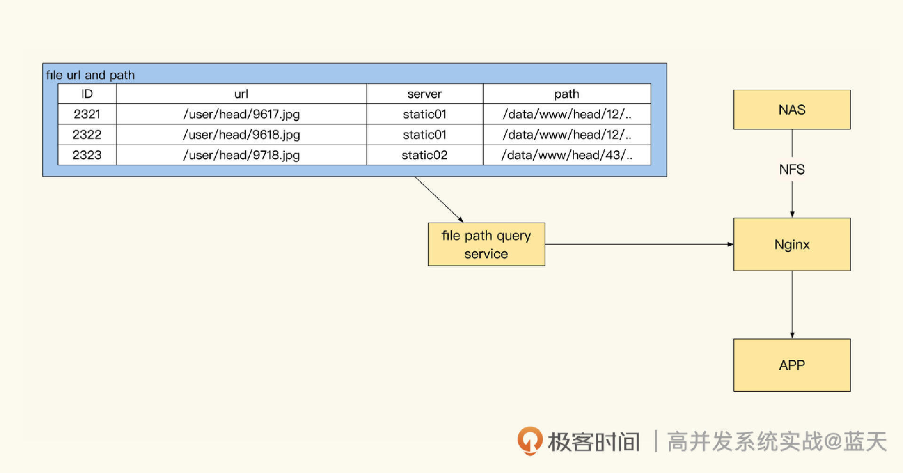
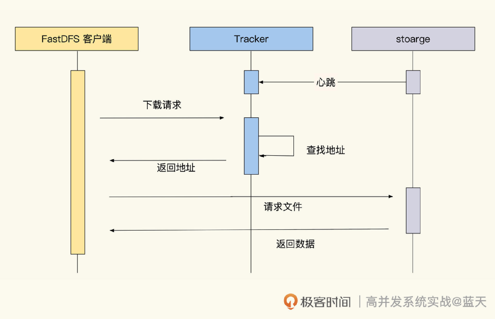
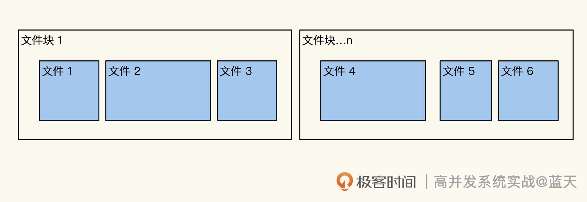
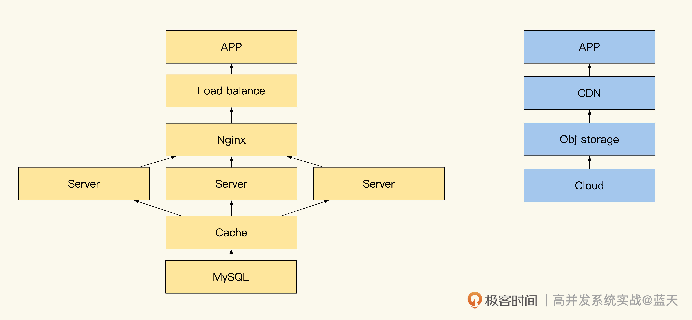
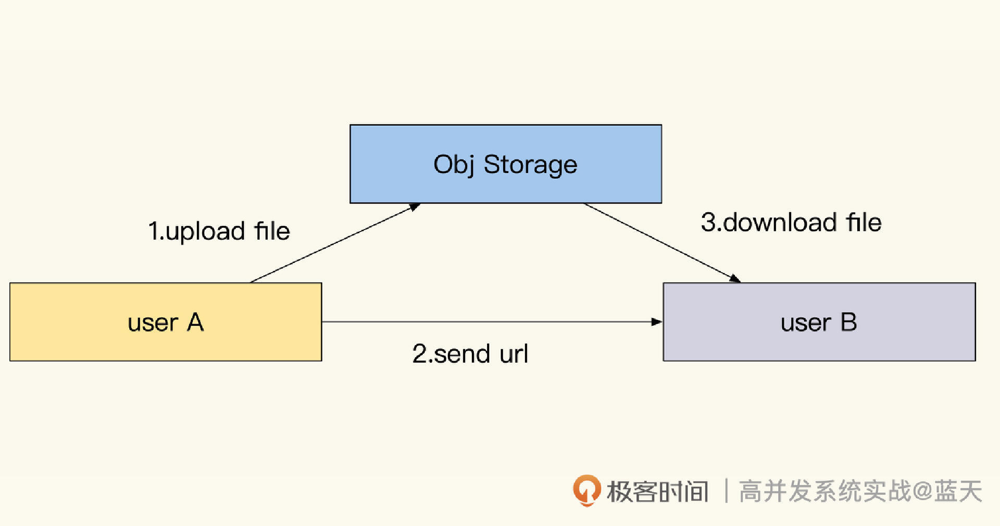
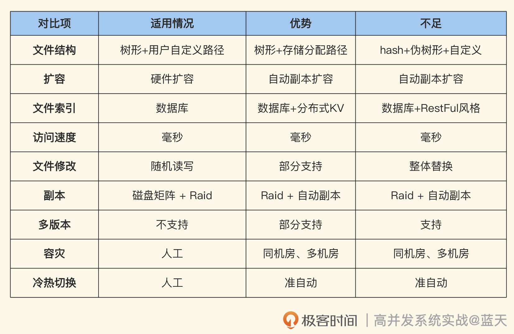

- 00 开篇词 高并发系统，技术实力的试金石.md.html
- 01 结构梳理：大并发下，你的数据库表可能成为性能隐患.md.html
- 02 缓存一致：读多写少时，如何解决数据更新缓存不同步？.md.html
- 03 Token：如何降低用户身份鉴权的流量压力？.md.html
- 04 同城双活：如何实现机房之间的数据同步？.md.html
- 05 共识Raft：如何保证多机房数据的一致性？.md.html
- 06 领域拆分：如何合理地拆分系统？.md.html
- 07 强一致锁：如何解决高并发下的库存争抢问题？.md.html
- 08 系统隔离：如何应对高并发流量冲击？.md.html
- 09 分布式事务：多服务的2PC、TCC都是怎么实现的？.md.html
- 10 稀疏索引：为什么高并发写不推荐关系数据库？.md.html
- 11 链路追踪：如何定制一个分布式链路跟踪系统 ？.md.html
- 12 引擎分片：Elasticsearch如何实现大数据检索？.md.html
- 13 实时统计：链路跟踪实时计算中的实用算法.md.html
- 14 跳数索引：后起新秀ClickHouse.md.html
- 15 实践方案：如何用C++自实现链路跟踪？.md.html
- 16 本地缓存：用本地缓存做服务会遇到哪些坑？.md.html
- 17 业务脚本：为什么说可编程订阅式缓存服务更有用？.md.html
- 18 流量拆分：如何通过架构设计缓解流量压力？.md.html
- 19 流量调度：DNS、全站加速及机房负载均衡.md.html
- 20 数据引擎：统一缓存数据平台.md.html
- 21 业务缓存：元数据服务如何实现？.md.html
- 22 存储成本：如何推算日志中心的实现成本？.md.html
- 23 网关编程：如何通过用户网关和缓存降低研发成本？.md.html
- 24 性能压测：压测不完善，效果减一半.md.html
- 答疑课堂 思考题答案（一）.md.html
- 结束语 为者常成，行者常至.md.html
- 捐赠
21 业务缓存：元数据服务如何实现？
你好，我是徐长龙。
当你随手打开微博或者一个综合的新闻网站，可以看到丰富的媒体文件，图片、文本、音频、视频应有尽有，一个页面甚至可能是由成百上千个文件组合而成。
那这些文件都存在哪里呢？通常来说，低于1KB的少量文本数据，我们会保存在数据库中，而比较大的文本或者多媒体文件（比如MP4、TS、MP3、JPG、JS、CSS等等）我们通常会保存在硬盘当中，这些文件的管理并不复杂。
不过如果文件数量达到百万以上，用硬盘管理文件的方式就比较麻烦了，因为用户请求到服务器时，有几十台服务器需要从上百块硬盘中找到文件保存在哪里，还得做好定期备份、统计访问记录等工作，这些给我们的研发工作带来了很大的困扰。
直到出现了对象存储这种技术，帮我们屏蔽掉了很多细节，这大大提升了研发效率。这节课，我们就聊聊存储的演变过程，让你对服务器存储和对象存储的原理和实践有更深的认识。
分布式文件存储服务
在讲解对象存储之前，我们先了解一下支撑它的基础——分布式文件存储服务，这也是互联网媒体资源的数据支撑基础。
我们先来具体分析一下，分布式文件存储提供了什么功能，以及数据库管理文件都需要做哪些事儿。因为数据库里保存的是文件路径，在迁移、归档以及副本备份时，就需要同步更新这些记录。
当文件数量达到百万以上，为了高性能地响应文件的查找需求，就需要为文件索引信息分库分表，而且还需要提供额外的文件检索、管理、访问统计以及热度数据迁移等服务。
那么这些索引和存储具体是如何工作的呢？请看下图：

我们从上图也能看出，光是管理好文件的索引这件事，研发已经疲于奔命了，更不要说文件存储、传输和副本备份工作，这些工作更加复杂。在没有使用分布式存储服务之前，实现静态文件服务时，我们普遍采用Nginx + NFS 挂载NAS这个方式实现，但是该方式缺点很明显，文件只有一份而且还需要人工定期做备份。
为了在存储方面保证数据完整性，提高文件服务的可用性，并且减少研发的重复劳动，业内大多数选择了用分布式存储系统来统一管理文件分发和存储。通过分布式存储，就能自动实现动态扩容、负载均衡、文件分片或合并、文件归档，冷热点文件管理加速等服务，这样管理大量的文件的时候会更方便。
为了帮助你理解常见的分布式存储服务是如何工作的，我们以FastDFS分布式存储为例做个分析，请看下图：

其实，分布式文件存储的方案也并不是十全十美的。
就拿FastDFS来说，它有很多强制规范，比如新保存文件的访问路径是由分布式存储服务生成的，研发需要维护文件和实际存储的映射。这样每次获取要展示的图片时，都需要查找数据库，或者为前端提供一个没有规律的hash路径，这样一来，如果文件丢失的话前端都不知道这个文件到底是什么。
FastDFS生成的文件名很难懂，演示路径如下所示：
# 在网上找的FastDFS生成的演示路径
/group1/M00/03/AF/wKi0d1QGA0qANZk5AABawNvHeF0411.png
相信你一定也发现了，这个地址很长很难懂，这让我们管理文件的时候很不方便，因为我们习惯通过路径层级归类管理各种图片素材信息。如果这个路径是/active/img/banner1.jpg，相对就会更好管理。
虽然我只是举了一种分布式存储系统，但其他分布式存储系统也会有这样那样的小问题。这里我想提醒你注意的是，即便用了分布式存储服务，我们的运维和研发工作也不轻松。
为什么这么说呢？根据我的实践经验，我们还需要关注以下五个方面的问题：
1.磁盘监控：监控磁盘的寿命、容量、inode剩余，同时我们还要故障监控警告及日常维护；
2.文件管理：使用分布式存储控制器对文件做定期、冷热转换、定期清理以及文件归档等工作。
3.确保服务稳定：我们还要关注分布式存储副本同步状态及服务带宽。如果服务流量过大，运维和研发还需要处理好热点访问文件缓存的问题。
4.业务定制化：一些稍微个性点的需求，比如在文件中附加业务类型的标签、增加自动TTL清理，现有的分布式存储服务可能无法直接支持，还需要我们阅读相关源码，进一步改进代码才能实现功能。
5.硬件更新：服务器用的硬盘寿命普遍不长，特别是用于存储服务的硬盘，需要定期更换（比如三年一换）。
对象存储
自从使用分布式存储后，再回想过往的经历做总结时，突然觉得磁盘树形的存储结构，给研发带来很多额外的工作。比如，挂载磁盘的服务，需要在上百台服务器和磁盘上提供相对路径和绝对路径，还要有能力提供文件检索、遍历功能以及设置文件的访问权限等。
这些其实属于管理功能，并不是我们对外业务所需的高频使用的功能，这样的设计导致研发投入很重，已经超出了研发本来需要关注的范围。
这些烦恼在使用对象存储服务后，就会有很大改善。对象存储完美解决了很多问题，这个设计优雅地屏蔽了底层的实现细节，隔离开业务和运维的工作，让我们的路径更优雅简单、通俗易懂，让研发省下更多时间去关注业务。
对象存储的优势具体还有哪些？我主要想强调后面这三个方面。
首先，从文件索引来看。在对象存储里，树形目录结构被弱化，甚至可以说是被省略了。
之所以说弱化，意思是对象存储里树形目录结构仍然可以保留。当我们需要按树形目录结构做运维操作的时候，可以利用前缀检索对这些Key进行前缀检索，从而实现目录的查找和管理。整体使用起来很方便，不用担心数据量太大导致索引查找缓慢的问题。
我想强调一下，对象存储并不是真正按照我们指定的路径做存储的，实际上文件的路径只是一个key。当我们查询文件对象时，实际上是做了一次hash查询，这比在数据库用字符串做前缀匹配查询快得多。而且由于不用维护整体树索引，KV方式在查询和存储上都快了很多，还更容易做维护。
其次，读写管理也从原先的通过磁盘文件管理，改成了通过API方式管理文件对象，经过这种思路简化后的接口方式会让数据读写变得简单，使用起来更灵活方便，不用我们考虑太多磁盘相关的知识。
另外，对象存储还提供了文件的索引管理与映射，管理数据和媒体文件有了更多可能。在之前我们的文件普遍是图片、音频、视频文件，这些文件普遍对于业务系统来说属于独立的存在，结合对象存储后，我们就可以将一些数据当作小文件管理起来。
但是，如果把数据放到存储中，会导致有大量的小文件需要管理，而且这些小文件很碎，需要更多的管理策略和工具。我们这就来看看对象存储的思路下，如何管理小文件。
对象存储如何管理小文件
前面我提过对象存储里，实际的存储路径已经变成了hash方式存储。为此我们可以用一些类似RESTful的思路去设计我们的对象存储路径，如：
- user\info\9527.json 保存的是用户的公共信息
- user\info\head\9527.jpg是我们的对应用户的头像
- product\detail\4527.json 直接获取商品信息
可以看到，通过这个设计，我们无需每次请求都访问数据库，就可以获取特定对象的信息，前端只需要简单拼接路径就能拿到所有所需文件，这样的方式能帮我们减少很多缓存的维护成本。
看到这里，你可能有疑问：既然这个技巧十分好用，那么为什么这个技巧之前没有普及？
这是因为以前的实现中，请求访问的路径就是文件实际物理存储的路径，而对于Linux来说，一个目录下文件无法放太多文件，如果放太多文件会导致很难管理。就拿上面的例子来说，如果我们有300W个用户。把300W个头像文件放在同一个目录，这样哪怕是一个ls命令都能让服务器卡住十分钟。
为了避免类似的问题，很多服务器存储这些小文件时，会用文件名做hash后，取hash结果最后四位作为双层子目录名，以此来保证一个目录下不会存在太多文件。但是这么做需要通过hash计算，前端用起来十分不便，而且我们平时查找、管理磁盘数据也十分痛苦，所以这个方式被很多人排斥。
不过，即使切换到了分布式存储服务，小文件存储这个问题还是让我们困扰，因为做副本同步和存储时都会以文件为单位来进行。如果文件很小，一秒上传上千个，做副本同步时会因为大量的分配调度请求出现延迟，这样也很难管理副本同步的流量。
为了解决上述问题，对象存储和分布式存储服务对这里做了优化，小文件不再独立地保存，而是用文件块方式压缩存储多个文件。
文件块管理示意图如下所示：

比如把100个文件压缩存储到一个10M大小的文件块里统一管理，比直接管理文件简单很多。不过可以预见这样数据更新会麻烦，为此我们通常会在小文件更新数据时，直接新建一个文件来更新内容。定期整理数据的时候，才会把新老数据合并写到新的块里，清理掉老数据。
这里顺便提示一句，大文件你也可以使用同样的方式，切成多个小文件块来管理，这样更方便。
对象存储如何管理大文本
前面我们讲了对象存储在管理小文件管理时有什么优势，接下来我们就看看对象存储如何管理大文本，这个方式更抽象地概括，就是用对象存储取代缓存。
什么情况下会有大文本的管理需求呢？比较典型的场景就是新闻资讯网站，尤其是资讯量特别丰富的那种，常常会用对象存储直接对外提供文本服务。
这样设计，主要是因为1KB大小以上的大文本，其实并不适合放在数据库或者缓存里，这是为什么呢？我们结合后面的示意图分析一下。

如上图，左边是我们通过缓存提供数据查询服务的常见方式，右图则是通过对象存储的方式，从结构上看，对象存储使用及维护更方便简单。
我们来估算一下成本。先算算带宽需求，假定我们的请求访问量是1W QPS，那么1KB的数据缓存服务就需要 1KB X 10000 QPS 约等于 10MB X 8（网卡单位转换bit）= 80MB/s （网络带宽单位）的外网带宽。为了稍微留点余地，这样我们大概需要100MB/s大小的带宽。另外，我们还需要多台高性能服务器和一个大容量的缓存集群，才能实现我们的服务。
这么一算是不是感觉成本挺高的？像资讯类网站这种读多写少的系统，不能降低维护成本，就意味着更多的资源投入。我们常见的解决方法就是把资讯内容直接生成静态文件，不过这样做流量成本是控制住了，但运维和开发成本又增高了，还有更好的方法么？
相比之下，用对象存储来维护资源的具体页面这个方式更胜一筹。
我们具体分析一下主要过程：所有的流量会请求到云厂商的对象存储服务，并且由CDN实现缓存及加速。一旦CDN找不到待查文件时，就会回源到对象存储查找，如果对象存储也找不到，则回源到服务端生成。这样可以大大降低网络流量压力，如果配合版本控制功能，还能回退文件的历史版本，提高服务可用性。
这里我再稍微补充一下实践细节。如果资讯有阅读权限限制，比如只有会员才能阅读。我们可以对特定对象设置权限，只有用短期会失效的token才可以读取文件的内容。
文件的云中转

除了服务端提供数据供用户下载的方式以外，还有一种实现比较普遍，就是用户之间交换数据。
比如A用户传递给B用户一个文件，正常流程是通过TCP将两个客户端链接或通过服务端中转，但是这样的方式传输效率都很低。
而使用对象存储的话，就能快速实现文件的传输交换。主要过程是这样的：文件传输服务给文件发送方生成一个临时授权token，再将这个文件上传到对象存储，上传成功后，接收方通过地址即可获取到授权token，进行多线程下载，而临时文件过期后就会自动清除。
事实上，这个方式不仅仅可以给用户交换数据，我们的业务也可以通过对象存储，实现跨机房数据交换和数据备份存储。
很多提供对象服务的厂商，已经在客户端SDK内置了多线程分片上传下载、GSLB就近CDN线路优化上传加速的功能，使用这类服务能大大加快数据传输的速度。
最后，再提一句容灾，可以说大部分对象存储服务的服务商都提供了容灾服务，我们所有的数据都可以开启同城做双活备份、全球加速、灾难调度、主备切换等功能。
总结
这节课我们一起学习了对象存储。通过和传统存储方式的对比，不难发现对象存储的优势所在。首先它的精简设计彻底屏蔽了底层实现细节，降低了磁盘维护的运维投入和维护成本。
我们可以把一些经常读取的数据从数据库挪到对象存储中，通过CDN和本地缓存实现来降低成本，综合应用这些经典设计会帮我们节约大量的时间和资源。
希望这节课激发你对对象存储的探索兴趣。行业里常用的对象存储项目包括：阿里云的OSS，腾讯的COS，华为云的OBS，开源方面有Ceph、MinIO等项目。
通过了解这些项目，你会对存储行业的未来发展趋势有更深入的认识。事实上，这个行业开始专注于为大型云服务厂商提供大型高速存储的服务，这样的集中管理会更加节省成本。
最后，我还为你整理了一个表格，帮你从多个维度审视不同存储技术的特点：

可以看到，它们的设计方向和理念不同，NFS偏向服务器的服务，分布式存储偏向存储文件的管理，而对象存储偏向业务的应用。
思考题
分布式存储通过文件块作为单位来保存管理小文件，当我们对文件内容进行更新时，如何刷新这个文件的内容呢？
今天的这节课就到这里，期待和你在留言区里交流。
© 2019 - 2023 Liangliang Lee. Powered by gin and hexo-theme-book.